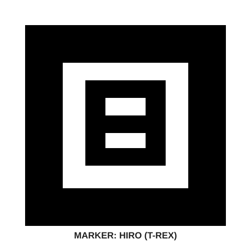
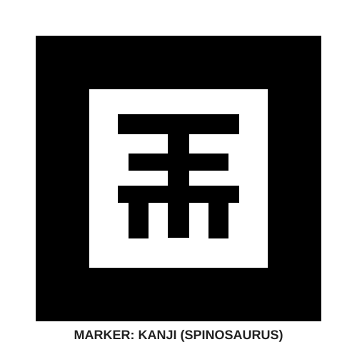
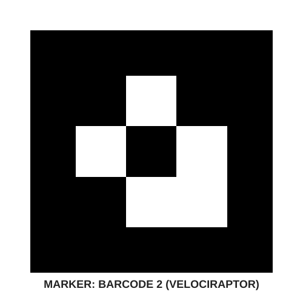
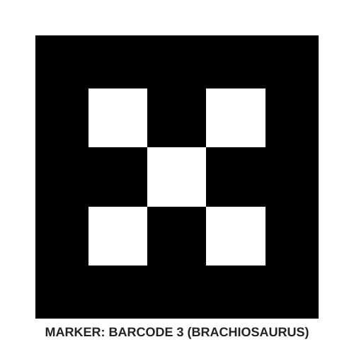
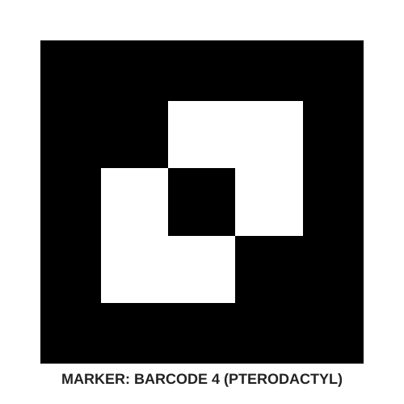

Gunakan lembar ini untuk dipindai menggunakan aplikasi Web AR Dinosaurus.

Arahkan kamera AR ke marker di atas untuk memunculkan T-Rex.

Arahkan kamera AR ke marker di atas untuk memunculkan Spinosaurus.

Arahkan kamera AR ke marker di atas untuk memunculkan Velociraptor.

Arahkan kamera AR ke marker di atas untuk memunculkan Brachiosaurus.

Arahkan kamera AR ke marker di atas untuk memunculkan Pterodactyl.